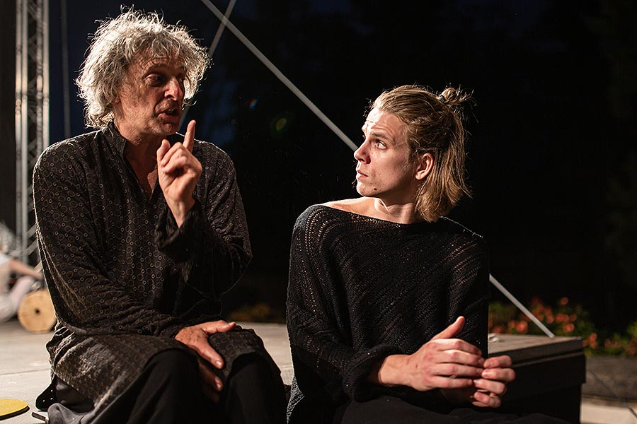
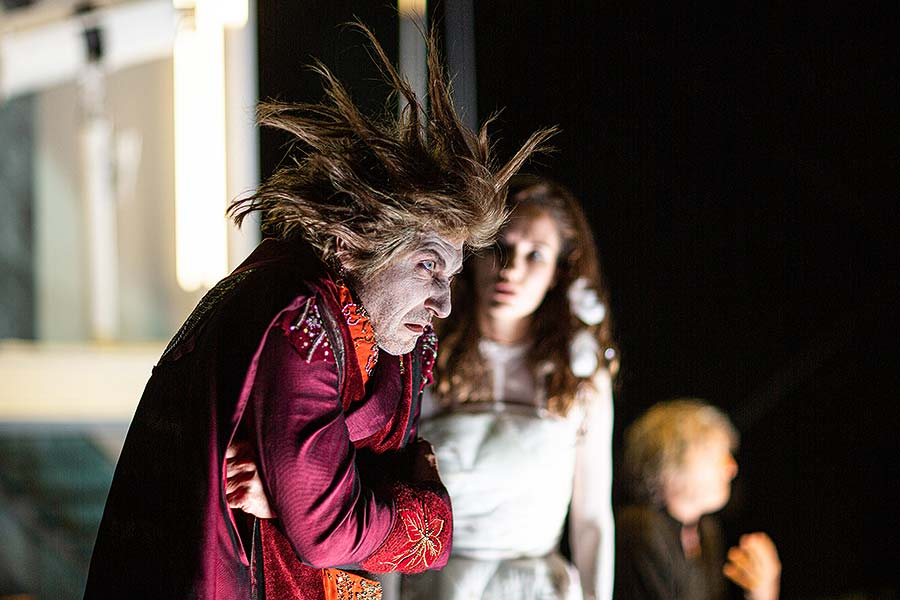
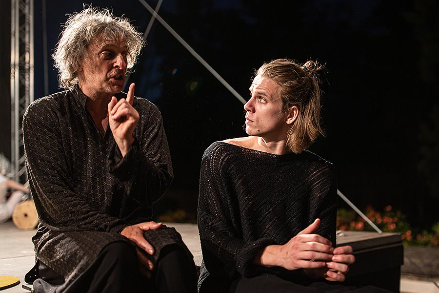
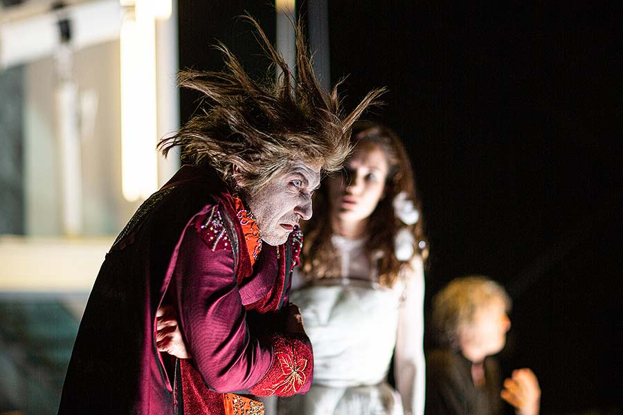

Letní shakespearovské slavnosti jsou nejstarší a největší divadelní přehlídkou pod širým nebem v Evropě zaměřenou na uvádění děl Williama Shakespeara.
Festival trvá od konce června do začátku září a odehrává se na otevřených scénách v Praze v Nejvyšším purkrabství Pražského hradu a od roku 2007 také na nádvoří Hudební a taneční fakulty AMU na Malostranském náměstí 13, v Brně (hrad Špilberk), v Ostravě (Slezskoostravský hrad) a v Bratislavě (Bratislavský hrad).
Vznik festivalu inicioval prezident Václav Havel. Ten začátkem 90. let otevřel Pražský hrad umělcům, aby na Hrad přilákali veřejnost. První shakespearovské představení tu proběhlo už v roce 1990 a od roku 1998 se tu slavnosti pořádají pravidelně. V letech 1999 a 2000 udělil Václav Havel festivalu svoji osobní záštitu. Akci svou záštitou podpořil v roce 2004 i tehdejší prezident Václav Klaus.
Ostatní
Hry Williama Shakespeara se hrají celosvětově v tradičních i moderních divadlech.
O jeho dílech se učí v literatuře i ve školách po celém světě.
v České republice
Praha: Letní Shakespearovské slavnosti,
Švandovo divadlo,
Národního divadla.
Brno: Hraje se například na hradě Špilberk v rámci Letních shakespearovských slavností.
Ostrava: V rámci Letních shakespearovských slavností se hraje na Slezskoostravském hradě.
Plzeň: Divadlo J. K. Tyla.
Městská divadla pražská
V zahraničí např. :
Anglie: divadlo Globe na nábřeží Temže v Londýně.
Bratislava: Mimo ČR se v rámci Letních shakespearovských slavností hraje i na Bratislavském hradě.
 


